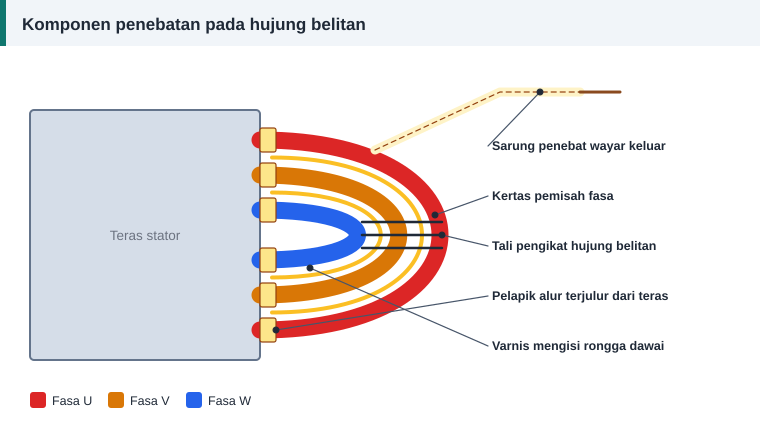

Dawai dan penebat
Penebat Alur, Baji dan Varnis: Bahan Penebatan Belitan
Kuprum membawa arus, tetapi penebat yang menentukan berapa lama motor bertahan. Setiap komponen penebatan mempunyai tugas tersendiri, dan kegagalan satu daripadanya sudah cukup untuk merosakkan belitan.


Lapisan penebatan dan fungsinya
| Komponen | Kedudukan | Fungsi |
|---|---|---|
| Enamel dawai | Pada setiap dawai | Menebat lilitan daripada lilitan bersebelahan |
| Pelapik alur | Di antara gegelung dan teras | Menebat belitan daripada besi yang dibumikan |
| Pemisah lapisan | Di tengah alur belitan dua lapis | Memisahkan dua sisi gegelung berlainan |
| Pemisah fasa | Di antara kumpulan pada hujung belitan | Menahan voltan penuh antara fasa |
| Baji | Di mulut alur | Mengunci dawai dan menutup alur |
| Sarung | Pada sambungan dan wayar keluar | Menebat dan melindungi secara mekanikal |
| Tali pengikat | Mengelilingi hujung belitan | Menegarkan belitan terhadap getaran |
| Varnis | Meresap ke seluruh belitan | Mengikat, menebat dan menghalang lembapan |
Bahan pelapik alur yang biasa
Bahan kepingan fleksibel dijual mengikut ketebalan dan kelas haba.
- Kertas presspan, bahan lama berasaskan selulosa untuk kelas rendah.
- Filem poliester, yang kuat secara elektrik dan biasanya dilapis dengan bahan lain.
- Laminat filem poliester dengan kain poliester, dikenali sebagai DMD. Pilihan umum untuk motor kelas B dan F.
- Laminat kertas aramid dengan filem poliester, dikenali sebagai NMN, untuk kelas F dan H.
- Kertas aramid, untuk suhu tertinggi.
Semak kelas haba yang dinyatakan oleh pembekal. Nama dagangan sahaja tidak mencukupi.
Memotong dan memasang pelapik
- Panjang pelapik ialah panjang teras ditambah unjuran di kedua-dua hujung. Lipat hujungnya menjadi kelepet.
- Lebarnya cukup untuk melapik dasar dan kedua-dua sisi alur hingga ke mulut.
- Jangan biarkan pelapik terlipat dua di dalam alur. Lipatan mencuri ruang kuprum dan menjejaskan faktor isian.
Baji
Baji daripada buluh, gentian atau kepingan laminat ditolak masuk dari hujung alur selepas gegelung dimasukkan. Baji yang longgar membiarkan dawai bergetar. Baji yang terlalu tebal menekan enamel sehingga rosak.
Varnis
Varnis melakukan tiga kerja: mengikat dawai supaya tidak bergetar, mengisi rongga supaya haba mengalir ke teras, dan menutup liang terhadap lembapan serta habuk.
Terdapat dua kumpulan utama. Varnis kering udara sesuai untuk pembaikan kecil. Varnis bakar memerlukan ketuhar tetapi memberi ikatan yang lebih kuat. Di kilang dan bengkel besar, impregnasi vakum-tekanan digunakan untuk resapan yang lebih sempurna.
Kaedah celup dan bakar
- Panaskan stator untuk membuang lembapan.
- Biarkan sejuk sedikit, kemudian celup sehingga gelembung udara berhenti keluar.
- Toskan, dan lap lebihan varnis dari lubang stator serta permukaan pemasangan.
- Bakar mengikut suhu dan tempoh yang ditetapkan oleh pengilang varnis.
- Sejukkan dan uji rintangan penebatan.
Kesilapan biasa
- Mencampur bahan daripada kelas haba yang berlainan.
- Varnis tidak cukup masak, sehingga belitan melekit dan rintangan penebatan rendah.
- Varnis terlalu tebal di lubang stator, sehingga rotor bergesel.
- Pemisah fasa tertinggal pada hujung belitan.
Rujukan dan bacaan lanjut
Artikel berkaitan
Kelas Penebat Motor A, E, B, F dan H Dijelaskan
Kelas penebat pada plat nama menetapkan suhu tertinggi yang boleh ditanggung belitan. Fahami had setiap kelas, kenaikan suhu dibenarkan dan pilihan bahan semasa lilitan semula.
Faktor Isian Alur: Berapa Banyak Dawai Boleh Masuk
Pengiraan memberi bilangan lilitan dan saiz dawai, tetapi alur yang menentukan sama ada semuanya muat. Faktor isian ialah semakan terakhir sebelum mula melilit gegelung.
Langkah Demi Langkah Melilit Semula Motor Tiga Fasa
Daripada menanggalkan belitan lama hingga ujian akhir, ikuti sepuluh langkah melilit semula stator motor tiga fasa dengan kemas, selamat dan mengikut amalan baik bengkel.